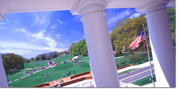

|
 |
2nd Annual Workshop
“Economics and Information Security” May 29-30, 2003 |
|||||
|
Agenda
|
Final Papers
|
|||||
“Economics and Information Security”
University of Maryland College Park, MD May 29-30, 2003
The economics of security is an important and rapidly growing field of research. Indeed, more and more people are coming to realize that security failures are often due to perverse economic incentives rather than a lack of technical protection mechanisms. (The former often explains the latter.) In other words, in the business world, there are complex linkages between information security activities and economics. Recognition of the importance of research that integrates economics and information security was highlighted at the Workshop on Economics and Information Security held at UC- Berkeley, in May 2002. The success of that Workshop has lead to an annual event, the second of which will be held at the University of Maryland at College Park. If you would like to present a paper at the Workshop, submit a detailed abstract (PDF format perferred) to Dr. Martin P. Loeb, General Chair by e-mail at (mloeb@rhsmith.umd.edu) by March 15, 2003. Approximateely 20 papers will be selected for presentation and total workshop participants will be limited to 50. Notification of acceptance for the program will be sent by April 6, 2003.
|
||||||